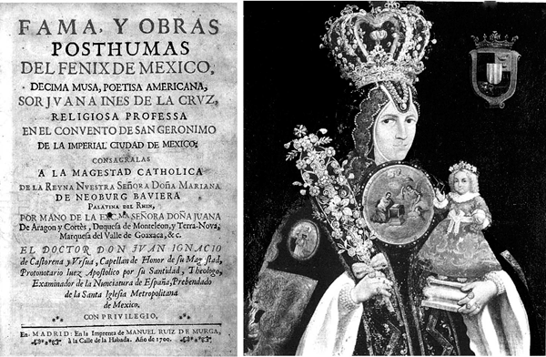

Sor Juana Inés de la Cruz Sor Juana Inés de la Cruz Fama y obras postumas […] Anónimo mexicano, siglo 17º Madrid, 1700
Llamada la Décima Musa y Fénix de América, Juana Inés de Asbaje y Ramírez de Santillana, fue la más importante y prolífica heredera americana de la poesía y la prosa del llamado Siglo de Oro. Mantuvo contacto con pensadores y poetas y con la corte virreinal de México. Demostró un precoz ingenio creativo, trasladado posteriormente a su obra, que aún sorprende y atrae a lectores contemporáneos. Hija ilegítima de una criolla y un militar español, sor Juana fue la clarísima excepción intelectual entre los miles de novicios y novicias que poblaban las celdas de los conventos y monasterios de la Nueva España. Renunció al extremo voto de clausura de las carmelitas, para ingresar a la orden de las jerónimas, con reglas más suaves que permitían los lazos con el mundo cotidiano exterior. Allí escribió poesía sacra y secular, hizo experimentos científicos y compuso villancicos para la Navidad. Autora de una extensa obra epistolar, hoy desaparecida, la mayor parte de su obra poética fue escrita por encargos y resulta difícil de fechar. Escribió loas, autos, reflexiones teológicas como la Carta atenagórica y experiencias filosóficas como Primero sueño. Murió de peste, después de renunciar a sus obras y posesiones. El poeta Octavio Paz sintetizó que lo incomparable en la obra de sor Juana está en “la perfección de una forma” estilística.